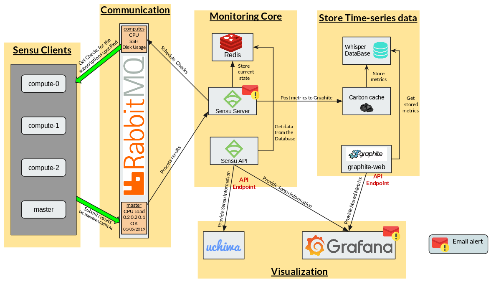

Monitoring Architecture
Basic information
Deploy date: 29th July, 2019
Sensu-Graphite-Grafana
Components
Monitoring Core: Provides a scalable event processing platform for processing check results and monitoring events. [1]
Sensu Server: Schedules and publishes check execution requests to client subscriptions. [1]
Sensu API: Provides access to monitoring data collected by Sensu through a RESTful API endpoint.
Redis: In-memory Key-value data structure store, used by Sensu to store monitoring data.
Sensu Clients: This layer is composed of the agents that need to be monitored.
Communication: Sensu Services use a message bus for communication, sensu check requests and check results are published as messages to this layer, and the corresponding sensu services receive these messages by subscribing to the appropriate subscriptions [2].
Warning
Using Redis as a transport greatly simplifies Sensu’s architecture, however, Redis transport is NOT recommended for production environments. [3]
RabbitMQ: Message Broker that communicates Sensu Clients with the Server.
Store Time-series data: Sensu doesn’t store time-series natively, it’s necessary to integrate it with Graphite to have historic registers of the results.
Carbon refers to various daemons that make up the storage backend of a Graphite installation [4]. This architecture only needs to use Carbon Cache, but later, Carbon Relay and Carbon aggregator can be added without problems.
Carbon Cache: listens for metrics and writes them to disk as efficiently as possible. This requires caching metric values in RAM as they are received and flushing them to disk on an interval using the underlying whisper library. It also provides a query service for in-memory metric datapoints, used by the Graphite web app to retrieve “hot data”. [4]
Graphite Web: Graphite’s user interface and RESTful API endpoint.
Whisper: Fixed-size database, similar in design and purpose to RRD (round-robin-database). Whisper allows for higher resolution (seconds per point) of recent data to degrade into lower resolutions for long-term retention of historical data.
Visualization: Displays the configuration, current state and monitoring results.
Uchiwa: Web Dashboard for visualizing Sensu status and Configuration.
Grafana: Shows time-series and monitoring results in dashboards and manage email alerts with established thresholds.
WorkFlow
{kind=link}
Sensu Server schedules the checks, posting pending checks in RabbitMQ for each subscription.
Each Sensu Client ask for the checks related to its subscriptions in RabbitMQ
After executing the Check, the clients post the results in RabbitMQ
Sensu Server processes the results and executes the respective handlers and mutators if necessary.
The last results are stored in Redis, registering ONLY the current state of the checks.
Sensu API provides that current state (configuration and events) to Grafana and Uchiwa.
If the check is configured, Sensu can report a bad execution or an unexpected situation sending an email.
The checks that have to be stored as TimeSeries pass their results to Carbon Cache.
Carbon Cache stores the results until the buffer is full, in this case, it flushes the results calling the Whisper Library and storing it as efficiently as possible.
Graphite Web provides this stored information through its API Rest endpoint.
Grafana takes the results stored in Graphite and creates the desired dashboard.
If a threshold is established and an alarm configured in Grafana, it can report an anomaly sending an email.